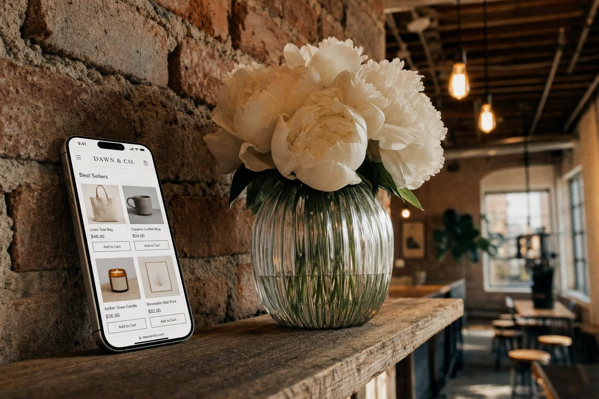
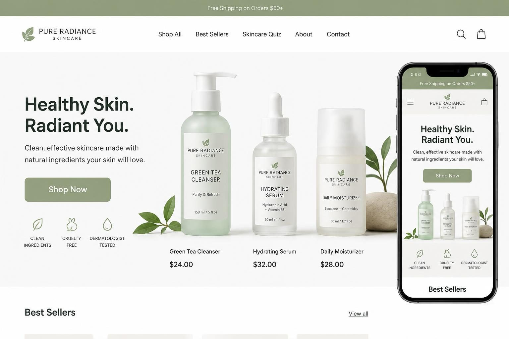
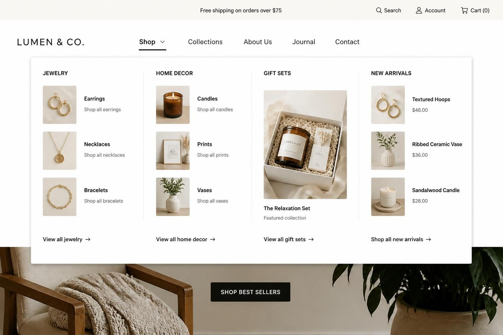
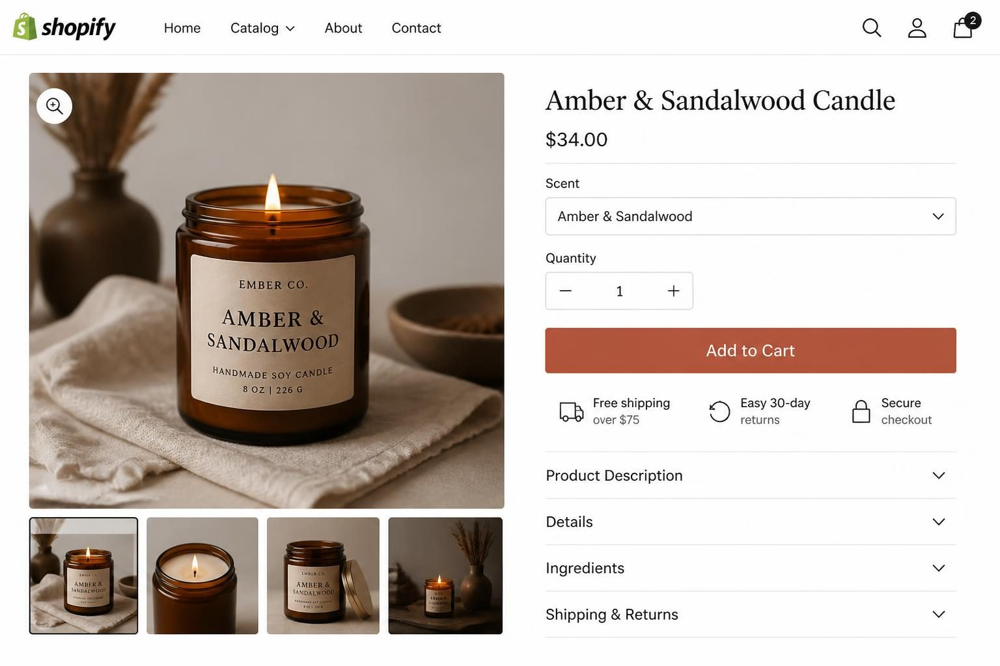

BEST ECOMMERCE WEBSITE DESIGN: WHAT ACTUALLY MAKES A SHOPIFY STORE CONVERT

The best ecommerce website design is one that makes buying feel effortless - clear product photos, obvious navigation, trust signals near the buy button, and a checkout that takes under 60 seconds. Everything else is decoration.
I have seen dozens of Shopify stores fail not because their products were bad, but because their website made buying feel like work. Customers landed, got confused, and left. The owner blamed marketing. The problem was design.
Here is the thing nobody tells you: the stores making consistent sales are not the prettiest ones. They are the clearest ones. The ones where a first-time visitor knows exactly what you sell within three seconds, finds what they want in two clicks, and checks out without creating an account or hunting for shipping information.
Most advice about the best ecommerce website design shows you award-winning sites built by agencies for brands with six-figure budgets. That is not useful if you are a product seller building your own Shopify store. You need to know what actually matters - and what you can skip entirely.
This post breaks down the specific design elements that drive sales, the mistakes that quietly kill conversions, and how to evaluate whether your current store is helping or hurting you. No gallery of pretty examples. Just the practical stuff that moves products.
WHY MOST SHOPIFY STORES LOSE SALES BEFORE CHECKOUT
The problem is rarely your products. It is usually your homepage.
Most store owners bury their products below their brand story, mission statement, or Instagram feed. New visitors do not care about your origin story yet. They care about whether you sell what they need.
I see this constantly: a handmade jewelry seller with beautiful pieces, but her homepage opens with three paragraphs about how she started making jewelry during the pandemic. By the time a visitor scrolls to actual products, they have already decided this is not a shopping site - it is a personal blog.
Your homepage has one job: show people what you sell and make it obvious how to buy it.
What does your above-the-fold look like right now?
Open your store on your phone. Screenshot exactly what appears before you scroll. If that screenshot does not include an actual product or a clear path to products, you are losing sales.
The hierarchy should be:
- Hero image featuring your bestselling product or collection (not a lifestyle photo without context)
- One clear call-to-action button that takes visitors to shop
- Navigation that uses customer language, not internal jargon
A skincare brand I worked with changed their homepage from a dreamy brand video to a simple grid of their three bestselling products with "Shop Now" buttons. Conversions jumped because visitors finally knew what the store actually sold.

THE DESIGN ELEMENTS THAT ACTUALLY DRIVE CONVERSIONS
Forget custom animations and parallax scrolling. The best ecommerce website design comes down to a handful of elements that directly affect whether someone buys.
Product photography is number one. No amount of beautiful layout compensates for phone photos taken on your kitchen counter. The stores that convert have consistent, high-quality images with multiple angles. Show the product on a clean background. Show it in use. Show scale - a necklace photographed next to a coin so customers know exactly how big the pendant is.
Trust signals need to be visible, not buried. "Free shipping over $75" should be a sticky banner at the top of every page - not hidden in your FAQ. Secure checkout badges, return policy snippets, and payment method logos belong near your Add to Cart button, not in the footer.
The single most important insight: guest checkout is non-negotiable. Forcing account creation before purchase is the fastest way to lose sales. Every major platform - Shopify included - lets you enable guest checkout with a single toggle. If yours is not on, fix it today.
Mobile experience matters more than desktop. Over half your traffic is coming from phones. Test your entire purchase flow on mobile. Time how long checkout takes. Note every moment you have to pinch, zoom, or struggle to tap a button. Those friction points are costing you money.
Site speed directly impacts conversions. Every additional second of load time reduces conversions by approximately 7%. Compress your images. Limit custom fonts. Remove apps you are not actively using - they slow everything down.
WHAT A GREAT SHOPIFY STORE ACTUALLY INCLUDES
This is where I see the biggest gap between stores that sell and stores that struggle. It is not about having the trendiest design - it is about having the right structure.
A real product catalog that scales. Your store needs to handle growth. That means proper collections, logical category structures, and a system for organizing products that makes sense when you have 50 items, not just 10.
Clear categories and collections. Navigation should mirror how your customers think, not how you organize inventory. A home goods store should have categories like "Kitchen" and "Living Room" - but also utility collections like "Gifts Under $50" or "New Arrivals" that help undecided shoppers find their way in.
A mega menu that showcases without overwhelming. When you have multiple product categories, a full dropdown menu that displays collections visually helps customers see their options at a glance. For smaller catalogs, a simple dropdown works better. The key is matching the navigation complexity to your actual inventory.

A slide-out cart drawer. When a customer adds something to cart, the best experience is a smooth side panel that shows their cart without leaving the page. They can see what they have added, continue shopping, or proceed to checkout - all without losing their place. This keeps customers in buying mode.
A free shipping progress bar. "You're $23 away from free shipping" is surprisingly effective. It shows customers exactly how close they are to reaching the free shipping threshold and encourages adding one more item. Most premium Shopify themes include this built in.
Cart upsell suggestions. Related product recommendations inside the cart ("Customers also bought...") increase average order value. This should be automatic, not something you manually configure for each product.
Fully mobile optimized. This goes beyond responsive design. The mobile version should feel intentional - thumb-friendly buttons, swipeable galleries, tap targets large enough for actual fingers. Not a shrunk-down desktop site.
If you want all of this built in without paying a developer to piece it together, my premade Shopify themes include every feature I just described. You get a professional store structure that is ready for real sales from day one - not a basic template you have to rebuild.
THE PRODUCT PAGE STRUCTURE THAT CONVERTS
Your product page is where the buying decision happens. Get this wrong and nothing else matters.
Here is the layout that works:
Left side: image gallery with thumbnail navigation. Multiple photos, lifestyle shots, and zoom functionality. If you sell clothing, include size reference photos. If you sell home decor, show scale.
Right side: the buying module. Title, price, variant selectors (size, color), Add to Cart button, and - this is critical - trust signals directly below the button. Shipping info, return policy snippet, secure payment badges. Do not make customers hunt for this information.
Below the fold: supporting content. Accordion sections for product details, sizing information, and care instructions keep the page clean while making information accessible. Below that, reviews and related products.

The most overlooked element: your product descriptions need to sell, not just describe. "8oz soy candle, cotton wick, hand-poured" tells me what it is. "Fills your living room with warm amber notes for up to 50 hours of burn time" tells me why I want it.
If you want to choose a Shopify store template that actually sells, focus on themes that get this product page structure right out of the box.
THE CHECKOUT MISTAKES KILLING YOUR SALES
You can have the most beautiful store in the world, but if your checkout creates friction, customers leave.
Mistake 1: Requiring account creation. Every time you force a customer to create an account before buying, you lose a percentage of sales. Enable guest checkout immediately. Let people create an account after they have bought if they want - not before.
Mistake 2: Missing payment options. Apple Pay, Shop Pay, PayPal, and for higher-priced items, Afterpay or Klarna. Customers have preferences. The more ways you let them pay, the fewer reasons they have to abandon.
Mistake 3: Hiding shipping costs until the last step. The number one reason for cart abandonment is unexpected costs at checkout. Show shipping information early. Better yet, build it into your pricing and offer free shipping.
Mistake 4: Too many form fields. Every additional field reduces completion rates. Do you really need a phone number? A separate billing address? Cut everything non-essential.
Mistake 5: No progress indicator. Customers want to know how many steps remain. A simple progress bar (Shipping → Payment → Confirmation) reduces anxiety and keeps people moving forward.
If you are setting up a Shopify store for the first time, configure your checkout settings before you do anything else.
HOW TO AUDIT YOUR CURRENT DESIGN (THE 20-MINUTE VERSION)
You do not need to hire an agency to know if your store design is working. Here is exactly what to check:
Step 1: The 5-second test. Show your homepage to three people who have never seen your store. Ask them: "What does this business sell?" If they cannot answer correctly, your hierarchy is wrong.
Step 2: Mobile walkthrough. Open your store on your phone. Go from homepage to product page to checkout. Time how long it takes. Note every friction point - tiny buttons, slow loads, confusing navigation.
Step 3: Speed test. Go to Google PageSpeed Insights and enter your URL. Note your mobile score. Anything below 50 needs immediate work. Common culprits: uncompressed images, too many apps, heavy custom fonts.
Step 4: Trust signal check. Open a product page. Without scrolling, can you see shipping information? Return policy? Secure checkout badges? If these are hidden in your footer, move them.
Step 5: Checkout flow test. Add something to your cart and go through checkout as if you were a customer. Is guest checkout enabled? How many form fields are there? Can you pay with Apple Pay or Shop Pay?
After your audit, prioritize fixes based on impact:
- Photography and trust signals - highest impact, fix first
- Checkout friction - direct revenue impact
- Navigation and structure - affects how long people stay
- Speed - affects both conversions and search rankings
If your current theme makes these improvements difficult, it might be time to choose a Shopify theme that actually converts.
FREQUENTLY ASKED QUESTIONS
Which platform has the best ecommerce website design options?
For product sellers focused on physical inventory, Shopify leads with the strongest ecosystem of professionally designed themes. Shopify holds 18.73% of ecommerce platform market share specifically because its themes are built for selling, not general websites. If you sell services with products on the side, Wix Stores might work better.
What are the most important features for ecommerce UI/UX?
The features that directly impact sales: mobile-optimized layouts, fast page load times, clear product photography with multiple angles, trust signals visible near the purchase button, guest checkout, and multiple payment options. Skip fancy animations - focus on removing friction from the buying process.
What makes an ecommerce site look professional?
Consistent product photography (same backgrounds, lighting, and style), cohesive typography (two fonts maximum), logical navigation that matches how customers think, and trust indicators placed where decisions happen. A professional store does not need to be elaborate - it needs to be clear and consistent.
Will AI replace the need for ecommerce design?
AI tools are making template customization faster, but the strategy behind good design - understanding what your specific customers need to see before they buy - still requires human judgment. AI helps with execution, not with knowing what your target customer trusts or what objections they have.
What is the best ecommerce website builder for small businesses?
For product-focused businesses selling physical inventory, Shopify offers the most complete package: reliable hosting, built-in payments, strong shipping integrations, and themes designed specifically for selling. The monthly cost is higher than DIY platforms, but the reduced friction typically pays for itself in conversions.
THE BEST ECOMMERCE WEBSITE DESIGN IS THE ONE THAT SELLS
The best ecommerce website design is not the prettiest one. It is the one that removes every obstacle between a visitor and a purchase.
That means clear product photography, obvious navigation, trust signals where decisions happen, and a checkout that does not require hunting for information or creating an account. Everything else - custom animations, unique layouts, trendy fonts - is secondary.
Start with what you can fix today: enable guest checkout, move your shipping information above the fold, test your mobile experience, and look at your product photos honestly. These changes cost nothing and directly impact sales.
If your current Shopify theme fights you at every turn - if simple changes require code edits or the structure just does not support how you want to sell - consider whether a theme designed for conversions would save you time. My premade Shopify themes include every feature I covered in this post: slide-out cart drawers, free shipping progress bars, cart upsells, mobile optimization, and product page layouts that are built to convert.
Whatever you choose, remember that your store design has one job: make buying feel effortless. When a customer lands on your site, they should know what you sell within three seconds and checkout within sixty. That is what the best ecommerce website design actually looks like.
Let me know in the comments below if you want me to cover any branding or marketing topics in more depth, and I'll make sure to create a blog post about it in the future.